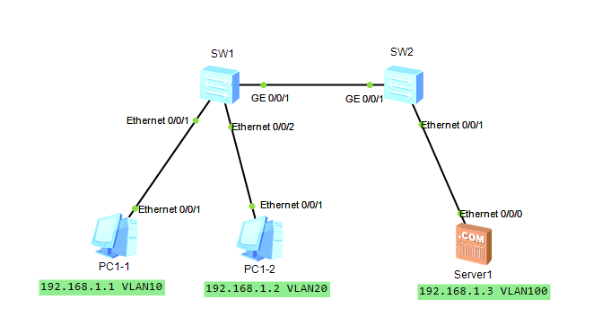
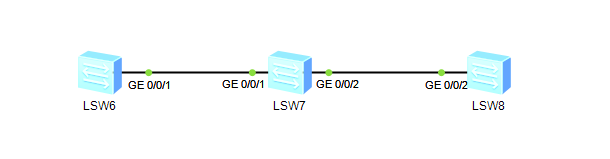

虚拟局域网（VLAN）技术-相关配置篇
VLAN实施
VLAN的添加与删除
Access接口与Trunk接口的配置
Hybrid接口的配置
检查VLAN信息
GVRP的配置
VLAN的添加与删除
vlan vlan-id：创建单个VLAN并进入相应视图，参数id的取值范围是1~4094，默认存在是vlan1；
vlan batch {vlan-id1 vlan-id2}：创建多个VLAN，不会进入相应视图；
vlan batch {vlan-id1 [to vlan-id2]}：创建多个连续的VLAN，不会进入相应视图；
拓扑图 ：
四台主机在同一网段（192.168.10.0）下，若不添加VLAN则是可以PING通的，若添加如图所示的VLAN，则4个主机被划分在了两个不同的VLAN中。
配置命令如下：
1 2 3 4 5 6 7 8 //在LSW1中创建VLAN10&20 [SW1] vlan batch 10 20 [SW1] vlan 10 [SW1-vlan10] description This is VLAN10 //可添加描述信息 [SW1-vlan10] quit [SW1] vlan 20 [SW1-vlan10] description This is VLAN20 //可添加描述信息 [SW1-vlan10] quit
Access接口与Trunk接口的配置
交换机与主机之间的接口模式是Access，与交换机之间的交口模式是Trunk；
1 2 3 4 5 6 7 8 9 10 11 12 [SW1] interface e0/0/1 [SW1-Ethernet0/0/1] port link-type access [SW1-Ethernet0/0/1] port default vlan 10 [SW1-Ethernet0/0/1] quit [SW1]interface e0/0/2 [SW1-Ethernet0/0/2] port link-type access [SW1-Ethernet0/0/2] port default vlan 20 [SW1-Ethernet0/0/2] quit [SW1] interface e0/0/3 [SW1-Ethernet0/0/3] port link-type trunk [SW1-Ethernet0/0/3] port trunk allow-pass vlan all [SW1-Ethernet0/0/3] quit
查看SW1中的VLAN信息：
1 2 3 4 5 6 7 8 9 10 11 12 13 14 15 16 17 18 19 20 21 22 23 24 25 26 27 28 29 30 [SW1]display vlan The total number of vlans is : 3 -------------------------------------------------------------------------------- U: Up; D: Down; TG: Tagged; UT: Untagged; MP: Vlan-mapping; ST: Vlan-stacking; #: ProtocolTransparent-vlan; *: Management-vlan; -------------------------------------------------------------------------------- VID Type Ports -------------------------------------------------------------------------------- 1 common UT:Eth0/0/3(U) Eth0/0/4(D) Eth0/0/5(D) Eth0/0/6(D) Eth0/0/7(D) Eth0/0/8(D) Eth0/0/9(D) Eth0/0/10(D) Eth0/0/11(D) Eth0/0/12(D) Eth0/0/13(D) Eth0/0/14(D) Eth0/0/15(D) Eth0/0/16(D) Eth0/0/17(D) Eth0/0/18(D) Eth0/0/19(D) Eth0/0/20(D) Eth0/0/21(D) Eth0/0/22(D) GE0/0/1(D) GE0/0/2(D) 10 common UT:Eth0/0/1(U) TG:Eth0/0/3(U) 20 common UT:Eth0/0/2(U) TG:Eth0/0/3(U) VID Status Property MAC-LRN Statistics Description -------------------------------------------------------------------------------- 1 enable default enable disable VLAN 0001 10 enable default enable disable This is VLAN10 20 enable default enable disable This is VLAN20
SW2 同上配置！
删除VLAN在添加相应vlan的命令前加{undo};
此时：在PC1上ping 192.168.10.2~4
1 2 3 4 5 6 7 8 9 10 11 12 13 14 15 16 17 18 19 20 21 22 23 24 25 26 27 28 29 30 31 32 33 34 35 36 PC>ping 192.168.10.2 Ping 192.168.10.2: 32 data bytes, Press Ctrl_C to break From 192.168.10.1: Destination host unreachable From 192.168.10.1: Destination host unreachable From 192.168.10.1: Destination host unreachable From 192.168.10.1: Destination host unreachable From 192.168.10.1: Destination host unreachable --- 192.168.10.2 ping statistics --- 5 packet(s) transmitted 0 packet(s) received 100.00% packet loss PC>ping 192.168.10.3 Ping 192.168.10.3: 32 data bytes, Press Ctrl_C to break From 192.168.10.3: bytes=32 seq=1 ttl=128 time=62 ms From 192.168.10.3: bytes=32 seq=2 ttl=128 time=63 ms From 192.168.10.3: bytes=32 seq=3 ttl=128 time=47 ms From 192.168.10.3: bytes=32 seq=4 ttl=128 time=47 ms From 192.168.10.3: bytes=32 seq=5 ttl=128 time=47 ms --- 192.168.10.3 ping statistics --- 5 packet(s) transmitted 5 packet(s) received 0.00% packet loss round-trip min/avg/max = 47/53/63 ms PC>ping 192.168.10.4 Ping 192.168.10.4: 32 data bytes, Press Ctrl_C to break From 192.168.10.1: Destination host unreachable From 192.168.10.1: Destination host unreachable From 192.168.10.1: Destination host unreachable From 192.168.10.1: Destination host unreachable From 192.168.10.1: Destination host unreachable --- 192.168.10.4 ping statistics --- 5 packet(s) transmitted 0 packet(s) received 100.00% packet loss
PC1只能与同一VLAN下的主机连通，配置完成。
Hybrid接口的配置
port link-type hybrid ：管理员配置命令，华为交换机的接口默认链路类型就是hybrid
port hybrid tagged valn ：为需要转发的VLAN数据添加标签
prot hybrid untagged vlan ：用来设置不带标签的VLAN数据
拓扑图：

此拓扑图结构为二层交换，所属在同一网段下，由VLAN划分出广播域，目的是让PC1-1与PC1-2之间不互通，与Server1之间互通 ，此次使用Hybrid链路模式
创建好VLAN后，为每个接口进行配置。
配置命令如下：
1 2 3 4 5 6 7 8 9 10 11 12 [SW1] interface e0/0/1 [SW1-Ethernet0/0/1] port hybrid pvid vlan 10 //为端口设置默认的VLAN10 [SW1-Ethernet0/0/1] port hybrid untagged vlan 10 100 //此端口接收帧时允许VLAN10 100通过 [SW1-Ethernet0/0/1] quit [SW1] interface e0/0/2 [SW1-Ethernet0/0/2] port hybrid pvid vlan 20 [SW1-Ethernet0/0/2] port hybrid untagged vlan 20 100 [SW1-Ethernet0/0/2] quit [SW1]interface g0/0/1 [SW1-GigabitEthernet0/0/1] port link-type hybird //将端口类型设置为Hybird模式 [SW1-GigabitEthernet0/0/1] port hybrid tagged vlan 10 20 100 //从此端口发送帧加上VLAN标签 [SW1-GigabitEthernet0/0/1] quit
1 2 3 4 5 6 7 [SW2] interface g0/0/1 [SW2-GigabitEthernet0/0/1] port hybrid tagged vlan 10 20 100 [SW2-GigabitEthernet0/0/1] quit [SW2]interface e0/0/1 [SW2-Ethernet0/0/1] port hybrid pvid vlan 10 [SW2-Ethernet0/0/1] port hybrid untagged vlan 10 20 100 [SW2-Ethernet0/0/1] quit
配置完成。
Hybird下带标记与不带标记的问题 ：
例如如上图，
在SW1 E0/0/1口上 设置了默认的VLAN10（port hybird pvid vlan10）
如果从此端口 发送
如果从此端口 接收
在交换机的G0/0/1口上 对端是交换设备可以识别带标记的帧，所有发出的帧都是带标记的。
*VLAN流量统计功能：
1 2 3 [SW1]vlan 10 [SW1-vlan10] statistic enable [SW1-vlan10] quit
检查VLAN信息 dispaly vlan //查看VLAN配置
GPVG配置 拓扑图：

1 2 3 4 5 6 7 8 9 10 11 12 13 14 15 16 17 18 19 20 21 22 23 24 [SW6] gvrp [SW6] vlan 5 //创建VLAN5 通过gvrp同步到SW7&8 [SW6] interface g0/0/1 [SW6-GigabitEthernet0/0/1] port link-type trunk [SW6-GigabitEthernet0/0/1] port trunk allow-pass vlan all [SW6-GigabitEthernet0/0/1] gvrp [SW7] gvrp [SW7] interface g0/0/1 [SW7-GigabitEthernet0/0/1] port link-type trunk [SW7-GigabitEthernet0/0/1] port trunk allow-pass vlan all [SW7-GigabitEthernet0/0/1] gvrp [SW7-GigabitEthernet0/0/1] quit [SW7] interface g0/0/2 [SW7-GigabitEthernet0/0/2] port link-type trunk [SW7-GigabitEthernet0/0/2] port trunk allow-pass vlan all [SW7-GigabitEthernet0/0/2] gvrp [SW8] gvrp [SW8] VLAN 5 //为了使SW7 的G0/0/2端口也同步到VLAN信息 [SW8] interface g0/0/2 [SW8-GigabitEthernet0/0/2] port link-type trunk [SW8-GigabitEthernet0/0/2] port trunk allow-pass vlan all [SW8-GigabitEthernet0/0/2] gvrp
1 2 3 4 5 6 7 8 9 10 11 12 13 14 15 16 17 18 19 20 21 22 23 24 25 26 //查看SW7的VLAN信息 //Dynamic（动态VLAN） [SW7] display vlan The total number of vlans is : 2 -------------------------------------------------------------------------------- U: Up; D: Down; TG: Tagged; UT: Untagged; MP: Vlan-mapping; ST: Vlan-stacking; #: ProtocolTransparent-vlan; *: Management-vlan; -------------------------------------------------------------------------------- VID Type Ports -------------------------------------------------------------------------------- 1 common UT:Eth0/0/1(D) Eth0/0/2(D) Eth0/0/3(D) Eth0/0/4(D) Eth0/0/5(D) Eth0/0/6(D) Eth0/0/7(D) Eth0/0/8(D) Eth0/0/9(D) Eth0/0/10(D) Eth0/0/11(D) Eth0/0/12(D) Eth0/0/13(D) Eth0/0/14(D) Eth0/0/15(D) Eth0/0/16(D) Eth0/0/17(D) Eth0/0/18(D) Eth0/0/19(D) Eth0/0/20(D) Eth0/0/21(D) Eth0/0/22(D) GE0/0/1(U) GE0/0/2(U) 5 dynamic TG:GE0/0/1(U) GE0/0/2(U) VID Status Property MAC-LRN Statistics Description -------------------------------------------------------------------------------- 1 enable default enable disable VLAN 0001 5 enable default enable disable VLAN 0005
配置完成！